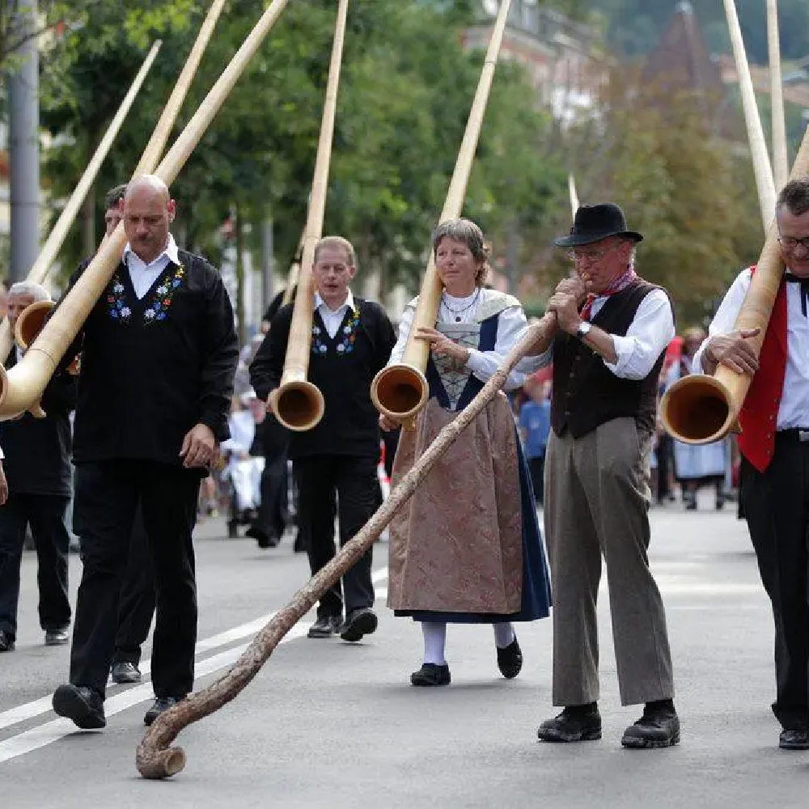

Cultura
Conheça a cultura do povo
Festividades: Cada cantão suíço celebra suas próprias festividades e manifestações culturais, que muitas vezes estão profundamente enraizadas em tradições e aspectos culturais locais. Essas celebrações incluem desde desfiles históricos e festivais religiosos até eventos dedicados à colheita e costumes alpinos.
Musica: A Suíça possui uma tradição musical vibrante e diversificada. A música folclórica suíça é representada por estilos icônicos como o yodeling, que encanta com suas melodias alternadas entre tons altos e baixos, e a música alpina, que utiliza instrumentos tradicionais como o alphorn. Outro destaque é a música ländler, um estilo de dança e música popular nos Alpes.
Artensanato: A Suíça é reconhecida pela qualidade e precisão do seu artesanato, destacando-se especialmente na produção de peças em metais nobres e na relojoaria. Os artesãos suíços criam joias, utensílios e objetos decorativos que combinam funcionalidade e elegância.
Culinaria: A culinária suíça é muito famosa e faz uso de produtos como batata, leite e queijos. É grandemente influenciada pelos países geograficamente vizinhos e culturalmente próximos, como a França, a Alemanha, a Itália, a Áustria e Lichtenstein. A culinária suíça é conhecida por seus queijos, chocolates e fondue, mas é muito diversificada e influenciada por países vizinhos como a França, Alemanha, Itália e Áustria.
Esporte: A Suíça é conhecida pela luta suíça, uma forma de luta livre que teve origem como esporte de pastores. Outro esporte típico é o Hornussen, que pode ser descrito como uma mistura de golfe e beisebol.
Museus: Museus: A Suíça possui uma impressionante quantidade de museus, sendo um dos países com mais museus per capita no mundo. Entre os destaques estão renomados museus de arte, como o Kunsthaus Zürich e a Fundação Beyeler, além de museus especializados, como o Museu Suíço do Transporte, em Lucerna, e o Museu Internacional da Relojoaria, em La Chaux-de-Fonds.